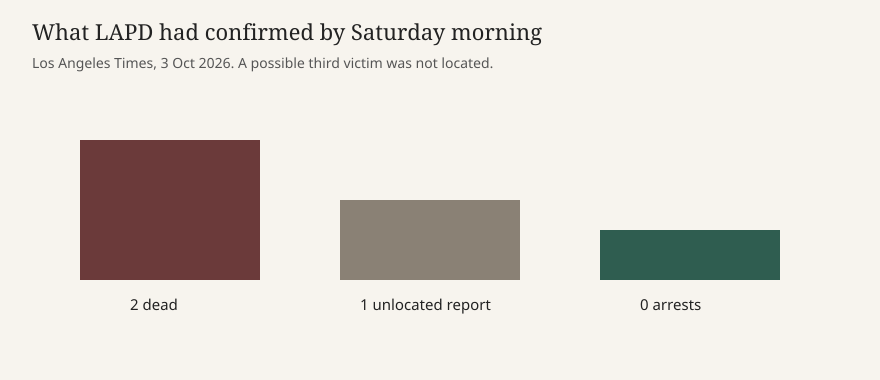

Los Angeles · police · 3 October 2026
Police said two people died at a Northridge strip-mall party

What the desks agree on
Los Angeles police responded shortly after 11 p.m. on Friday, 2 October 2026, to the 18000 block of Nordhoff Street in Northridge, less than a mile from California State University, Northridge. By Saturday morning the Los Angeles Times, citing an LAPD spokesperson, reported two people dead at the scene: a woman and a man, both between 18 and 25. ABC News, citing its local station KABC, reported the same death toll and placed the party at a venue called The Artists Lounge inside a strip mall. No suspect description and no arrest had been announced as of the Saturday pieces scored here.
The Times adds two limits that ABC’s early brief does not emphasize. Police had heard of a possible third victim and had not found a third body by Saturday morning. No other injuries were confirmed in the Times account. OnScene Media, cited by the Times, reported that attendees appeared to be minors and were picked up by parents. That is a media observation at the scene, not an LAPD age census. The campus is adjacent in the geographic sense used by both desks. Neither story says the shooting was inside a university building or at a university event.
What is only a quote or a local report
The mechanism is still thin. ABC says officers were answering a call about a large party and heard gunshots on arrival. The Times says the call was of possible shots fired and that officers found the two bodies. Those are compatible, not identical. Neither piece names a weapon, a motive, or a number of rounds. Handcuffs visible in early video, which ABC describes, are a detention step during a canvas. They are not charges. The Times later confirmed with a spokesperson that no arrests had been made.
The venue name comes through CBS, via the Times, and through KABC, via ABC. The Times says the venue had not answered a request for comment on Saturday. A party promoter, a guest list, and a security plan are not in these articles. Treating “private party” as a legal category would get ahead of the record. It is the description the desks are using.
Why the geography matters and what it does not prove
Nordhoff Street is a commercial edge of the San Fernando Valley campus. A strip mall within a short walk of a university will draw students and non-students on a Friday night. Proximity is a fact about the address. It is not evidence that the university police had jurisdiction, that a campus alert should have gone out, or that the dead were enrolled. As of these stories, the responding agency is the LAPD. Cal State Northridge is the landmark headline writers use so readers can place the block.
Homicide investigations in Los Angeles often begin with a scene hold, witness canvass, and video from nearby businesses. A Saturday morning story with no arrest is the ordinary shape of that first day, not a sign that detectives have closed the file. The unlocated third-victim report is a specific unknown. It may resolve as a rumor, a wounded person who left, or another death. The Times marks it as unconfirmed. Copying it forward as a third death would raise the count beyond the evidence.
Age range is also a bound, not an identification. “Between 18 and 25” does not say whether either person was a minor, a student, or armed. OnScene’s note that some attendees looked young is a separate claim about the crowd, not about the dead. Parents collecting people is consistent with a teen party and also consistent with a mixed crowd. The stories do not publish school names.
What this story is not
It is not a campus shooting inside a CSUN building. It is not a named suspect, a gang allegation, or a terrorism claim. It is not a final injury list. The library photograph is a 2008 exterior of the Oviatt Library, used because a reusable still of the mall on Friday night is not available under an open license. It shows the nearby campus, not the crime scene.

Source articles and scores
| Outlet | Headline | T | N | C |
|---|---|---|---|---|
| Los Angeles Times | Two dead after shooting at private party in strip mall near Cal State Northridge | 94 | 0 | 96 |
| ABC News | At least 2 dead after shooting during party at LA strip mall: Police | 90 | -2 | 88 |
| ABC News (GMA log) | Good Morning America, 3 October 2026: at least two dead after a strip-mall shooting near Cal State Northridge | 84 | 0 | 80 |
The Times keeps the third body as unlocated and the arrest count at zero, so C stays high. ABC’s early copy depends on KABC for the venue and the gunshot-on-arrival sequence; that is labeled, but thinner. The broadcast log is a shorter retelling and scores lower on T and C for that reason.